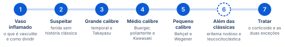
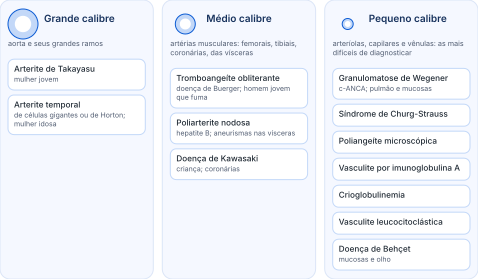
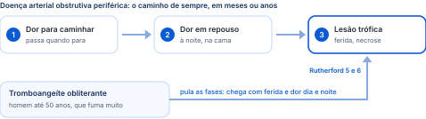
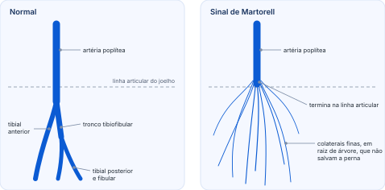
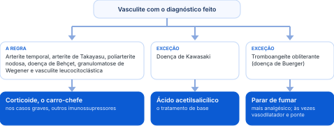

Pessoa sem vasculite
O corticoide atrasa: a cicatrização fica mais lenta.
Como suspeitar de uma vasculite, separá-la pelo calibre do vaso e lembrar quais não se tratam com corticoide.
Organizada a partir da aula e dos slides, em linguagem simples. A legenda de cores está na página 2.

Em palavras simples. Vasculite é a parede de um vaso sanguíneo inflamada. O vaso inflamado pode estreitar, entupir ou romper, e o pedaço do corpo que ele alimenta sofre. Como existem dezenas de vasculites, o jeito mais simples de organizá-las é pelo tamanho do vaso que cada uma ataca.
Qualquer doença que inflame a parede de um vaso se chama vasculite. O nome arterite (inflamação da artéria) ainda é muito usado, mas é incompleto: vasculite é mais genérico, vale para artérias e veias, e por isso é o termo preferido.
A inflamação pode atingir qualquer tipo de vaso, em qualquer órgão, e por isso a doença se mostra de muitos jeitos. No microscópio, a parede normal, fina e organizada, fica tomada por células inflamatórias. A lesão pode ser aguda, crônica, granulomatosa, com ou sem necrose, e a consequência são hemorragias e infartos do tecido. Em alguns casos, doenças diferentes deixam o mesmo desenho no microscópio.
“Doença reumática é mais ou menos isso aí: você vê um negócio muito ruim acontecendo e você não sabe de onde ele vem.”
A vasculite pode ser uma doença do próprio vaso (primária) ou fazer parte de uma doença do corpo todo. Entram nesse segundo grupo as doenças do tecido conjuntivo, como o lúpus eritematoso sistêmico e a artrite reumatoide, as neoplasias malignas (geralmente as linfoproliferativas), a crioglobulinemia mista e a púrpura de Henoch-Schönlein.
Antigamente, quem descrevia um conjunto de sinais e sintomas dava o próprio nome à doença: é o epônimo. Daí vêm a púrpura de Henoch-Schönlein e as doenças de Takayasu, de Buerger, de Horton, de Behçet e de Kawasaki. Decorar todos os nomes é difícil e rende pouco; a aula fica nos pontos mais úteis.
Pela origem, a vasculite pode vir de uma inflamação mediada pelo sistema imune, da invasão direta do vaso por um micro-organismo ou das duas coisas juntas. Saber qual é o caso importa porque muda o tratamento. A tabela dos slides separa assim:
Quem trata vasculite todo dia precisa de mais detalhe, mas para estudar a divisão pelo calibre resolve. As de pequeno calibre são as mais difíceis de identificar e de diagnosticar.

A divisão da aula, que é também a dos slides (classificação de Chapel Hill, 1994). O anel mostra o tamanho relativo do vaso.
O que separa uma vasculite da outra, muitas vezes, é um marcador no sangue. O principal é o anticorpo anticitoplasma de neutrófilo (ANCA), que pode ser do tipo C (c-ANCA) ou do tipo P (p-ANCA). As que não têm esse anticorpo têm outros marcadores, como as crioglobulinas.
Nos slides: o c-ANCA da granulomatose de Wegener é dirigido contra a proteinase 3; o p-ANCA aparece na síndrome de Churg-Strauss e na poliangeíte microscópica (contra a mieloperoxidase), e a tabela não liga a poliarterite nodosa a nenhum ANCA.
Nos livros: a poliarterite nodosa clássica costuma ser ANCA negativa; o p-ANCA é mais ligado à poliangeíte microscópica e à síndrome de Churg-Strauss.
Em palavras simples. A vasculite quase nunca chega com cara de doença vascular. Chega como cansaço, emagrecimento e uma ferida que não tem explicação. Quem pensa nela pede os exames básicos e chama o reumatologista cedo, sem largar o paciente.
O dia a dia do cirurgião vascular tem histórias que se repetem. Quando a ferida foge delas, acenda o alerta.
“Quando aparece uma ferida que não tem uma história clínica clássica, a chance de ser uma vasculite aumenta muito.”
Investigando, não se acha câncer nem infecção: a pesquisa inicial vem normal, menos as provas de atividade inflamatória, muitas vezes elevadas. Daí em diante é preciso imaginar a vasculite e saber que exames pedir, um mundo difícil para a maioria dos médicos. Os slides resumem a clínica: variada (febre, dor muscular, dor nas articulações e mal-estar), conforme a doença associada e os órgãos afetados.
O caso mais conhecido no Brasil foi o de uma modelo, no Espírito Santo. Ela teve infecção urinária, foi ao posto e recebeu um remédio; não melhorou, voltou e ouviu que devia tomar mais água; piorou, foi internada e evoluiu para sepse. Quando entrou o antibiótico mais potente, já era tarde: as mãos e os pés necrosaram e foram amputados. No jornal, a história virou manchete de erro médico grave.
Pedir sozinho a bateria inteira de exames reumatológicos. Custa caro, nem sempre responde a pergunta, e um resultado no limite abre um mundo de hipóteses. O certo é suspeitar e chamar o reumatologista para pedir o exame certo.
O laudo vem com “padrão nuclear pontilhado, titulação 1 para 32”, e a referência do laboratório diz que acima de 1 para 31 pode sugerir doença. E agora? Ao telefone, o reumatologista pergunta: “A senhora chupou pirulito ontem, da marca tal? Então pode ser isso: ele dá falso positivo.”
“Na maioria das vezes, quando a pessoa tem uma vasculite, a maioria tira o corpo fora, deixa o paciente à míngua, porque é um abacaxizão a ser descascado.”
Em palavras simples. As duas atacam a aorta e os seus grandes ramos, e as duas são de mulheres; o que separa é a idade. A temporal é da mulher idosa e se confirma com biópsia; a de Takayasu é da mulher jovem e se confirma com angiotomografia. As duas são tratadas com corticoide.
A arterite temporal também se chama arterite de células gigantes ou arterite de Horton. Ataca geralmente mulheres idosas, acima dos 60 anos. Por que aparece, ninguém sabe: não há fator desencadeante conhecido. Os slides falam em resposta imune mediada por linfócitos T e por substâncias inflamatórias, como o fator de necrose tumoral.
Nos slides: doença de idosos, rara antes dos 50 anos.
A queixa mais comum é a cefaleia. Pode haver perda visual e dor para mastigar, além de mal-estar, perda de peso e calafrio à noite. Algumas pacientes contam que a lateral da cabeça fica tensa e dolorida. Os slides acrescentam que a doença atinge as artérias da cabeça, inclusive as vertebrais e as oftálmicas, e pode levar à cegueira: é uma emergência médica.

Imagem dos slides da aula.
O nome engana. A arterite “temporal” é uma vasculite de vaso de grande calibre, e a artéria temporal não é um vaso grande. Ela é só o lugar onde a doença se mostra; a doença ataca também outros vasos.
O corticoide é o carro-chefe do tratamento da maior parte das arterites, e a arterite temporal é o primeiro exemplo. A dose de ataque é alta e cai aos poucos até a manutenção.
Dose alta no ataque, redução lenta, por 1 a 2 anos.
A maioria usa 1 mg/kg/dia no ataque. Assim como vem, a doença vai embora: sem sequela importante, a paciente fica em remissão.
“Curada a gente nunca pode dizer, porque ninguém sabe como, por que apareceu.”
É parecida com a temporal no quadro e no microscópio; muda o público: mulheres mais jovens, geralmente até os 35 anos, com predileção pela população asiática (as pacientes com Takayasu que o Dr. Jeferson atendeu eram asiáticas). Pode haver relação com a fase hormonal dessas mulheres, talvez com o excesso de estrógeno criando a inflamação.
Ela gosta da aorta e dos seus principais ramos: troncos supra-aórticos, artérias renais e, nos casos mais graves, artérias pulmonares. São quatro grandes grupos, e o tipo IV é o mais grave, porque atinge a artéria pulmonar: cria hipertensão pulmonar e dificulta a passagem do sangue pelo pulmão para ser oxigenado.
Os slides completam: a artéria pulmonar é atingida em 50% dos casos; toda a espessura da parede da aorta engrossa e fibrosa; a luz dos grandes vasos estreita e os pulsos dos braços enfraquecem (por isso o apelido “doença sem pulso”). No microscópio, há inflamação granulomatosa com células gigantes e necrose em focos da camada média.
Nos livros: os quatro tipos seguem a classificação de Lupi-Herrera. Tipo I, arco da aorta e seus ramos; tipo II, aorta torácica descendente e abdominal; tipo III, os dois territórios; tipo IV, qualquer um deles com a artéria pulmonar.
Como a maioria das vasculites, começa com cara de infecção: febre, emagrecimento, mal-estar, perda de peso e fraqueza. Às vezes a descoberta é no consultório: a pressão é diferente nos dois braços, 5 por 2 de um lado e 12 por 8 do outro. Nas fases críticas, a inflamação leva à isquemia: do braço, do cérebro e do rim, que aparece como hipertensão. A hipertensão no jovem é uma das apresentações mais comuns: investigando, a artéria renal está estenosada.
Não há exame de laboratório específico; as provas de atividade inflamatória vêm elevadas. Quem fecha o diagnóstico é a imagem, porque ela é muito característica. O exame de escolha é a angiotomografia, que dá um panorama de tudo o que acontece dentro do tórax e mostra os pontos de estenose seguidos de dilatação pós-estenótica: o vaso inflama, estreita e, logo depois, dilata.

Arteriografia do arco da aorta. Imagem dos slides da aula.
Padrão-ouro não é o exame mais pedido. A angiografia é o padrão-ouro, mas exige injetar contraste vaso por vaso; a angiotomografia bem feita avalia tudo de uma vez e é o exame principal. A vantagem da angiografia é tratar na hora: achou uma artéria renal estenosada, já passa o balão e faz a angioplastia. Qualquer exame contrastado dá a informação necessária.
Mesma base: corticoide, geralmente 1 mg/kg. Nos casos graves entram outras classes de imunossupressores, fora da alçada do cirurgião vascular. Quando há isquemia, como na hipertensão do jovem com artéria renal estenosada, o tratamento endovascular tem sido muito usado: fio-guia dentro da artéria renal, dilatação com balão, stent e, depois, o cuidado de qualquer angioplastia, com antiagregante.
Em palavras simples. Três doenças de artérias médias, cada uma com o seu paciente típico: a tromboangeíte é do homem jovem que fuma, a poliarterite nodosa anda com a hepatite B e ataca as vísceras, e a doença de Kawasaki é da criança e ataca as coronárias. Duas delas fogem do corticoide.
Também chamada doença de Buerger, é uma das vasculites mais conhecidas, e é especial porque tem uma causa provável: o tabagismo. Acredita-se que alguma substância da fumaça, agredindo os vasos por anos, cause a inflamação e a obstrução; os slides falam em toxicidade do tabaco para as células do endotélio ou em resposta imune. Atinge vasos médios, sobretudo as artérias femorais e tibiais (nos slides, também as de pequeno calibre, como a tibial e a radial). O paciente é geralmente homem, até os 50 anos.
Nos slides: principalmente em grandes tabagistas, antes dos 35 anos.
O paciente chega com isquemia avançada. Ele não passa pelas fases da doença arterial obstrutiva periférica: primeiro dor para caminhar, depois dor em repouso, por fim a lesão trófica. Chega dizendo: “Com 20 dias de evolução apareceu essa ferida no pé e me dói dia e noite.” Já entra nos graus mais avançados da classificação de Rutherford, 5 e 6.

Pode ter outras inflamações: fenômeno de Raynaud e tromboflebite em outros pontos. Os slides citam flebite nodular superficial, sensibilidade ao frio nas mãos, dor no pé, úlceras crônicas nos dedos dos pés e das mãos e gangrena.
É uma das marcas da tromboangeíte na arteriografia. A artéria poplítea, que deveria descer e se dividir em tibial anterior e tronco tibiofibular, “morre” na altura da linha articular do joelho e forma uma raiz, como a de uma planta tirada da terra. As artérias principais ocluem, e a circulação colateral que se forma não basta para manter a perna viva: muitas vezes o caminho é a amputação.

Desenho esquemático da arteriografia.
A inflamação forma verdadeiros abscessos dentro do vaso. “Já tive paciente de tromboangeíte que eu operei e, na hora que eu abri o vaso, saiu pus.” Parece infecção por bactéria, mas o pus colhido é estéril: é pus de reação inflamatória. Nos slides, o trombo aparece com microabscessos de neutrófilos cercados por inflamação granulomatosa.
É a primeira vasculite da aula que não usa corticoide como base. Quando o paciente para de fumar, na maioria das vezes a inflamação cessa. O resto é apoio: analgésico, às vezes vasodilatador e, se a obstrução tiver tratamento cirúrgico, uma ponte (derivação), como a ponte fêmoro-distal. Quem não consegue parar de fumar continua piorando.
Até os anos 1990 se fumava muito no Brasil: os carros com que Ayrton Senna foi campeão levavam marcas de cigarro, havia cinzeiro no ônibus de viagem e gente fumando na churrascaria, no restaurante e na balada. Nos últimos 30 anos isso mudou radicalmente. Era a época em que a tromboangeíte mais aparecia: jovens com vício muito intenso, que acabavam na amputação.
É difícil de diagnosticar: em toda a carreira, o Dr. Jeferson viu um ou dois casos, e um deles tinha, além das feridas, hepatite ativa. O paciente tem um processo inflamatório difuso, com feridas, perda de peso e emagrecimento.
Investigando, aparecem três pistas: sorologia de hepatite alterada em boa parte dos casos, o anticorpo anticitoplasma de neutrófilo do tipo P (p-ANCA) e dilatações aneurismáticas nas vísceras, que podem trombosar ou romper e matar o paciente.
“Se você oclui um vaso que vai para um dedo, o dedo necrosa, a pessoa não morre. Mas se você ocluir um vaso que vai para uma alça intestinal, essa alça apodrece, perfura e a pessoa morre.”
O corticoide volta a ser o carro-chefe (é a terceira vasculite da aula com corticoide), com imunossupressão mais intensa. Estabilizada, a doença entra em remissão, mas as complicações dos pequenos aneurismas continuam a aparecer.
Outra arterite estranha, e esta gosta de criança. A criança tem febre, mal-estar e vermelhidão no corpo; costuma ser tratada como sarampo ou virose, mas a febre continua e não melhora com remédio nenhum. Investigando, as provas de atividade inflamatória vêm altas, e o vaso atacado é a coronária: a criança passa a ter sinais de isquemia do miocárdio, e algumas chegam a infartar.
Os slides acrescentam: é a principal causa de doença do coração adquirida na infância; é febril, aguda e autolimitada, de lactentes e crianças (80% abaixo dos 4 anos); atinge vasos de grande e médio calibre e até pequenos; nas coronárias formam-se aneurismas que rompem ou trombosam e causam infarto. A inflamação pode desaparecer, mas 20% ficam com sequelas cardiovasculares, e a doença pode ser fatal.

Imagem dos slides da aula.
O quadro dos slides traz os critérios do diagnóstico e quanto cada um aparece:
A linha de base é um anti-inflamatório não esteroidal: o ácido acetilsalicílico. Por causa do vaso atingido, a criança fica sob vigilância de perto. No único caso que o Dr. Jeferson viu, o filho de um médico que fez o diagnóstico, o tratamento chegou a usar até interferon. Nos slides, o tratamento é imunoglobulina e aspirina.
Das cinco vasculites vistas até aqui, três usam corticoide (temporal, Takayasu e poliarterite nodosa), uma pede parar de fumar (tromboangeíte) e a outra, ácido acetilsalicílico (Kawasaki).
Em palavras simples. As vasculites de vasos pequenos gostam de mucosa: fazem feridas na boca e pelo corpo e inflamam o olho. Se, além disso, o pulmão adoece, pense em granulomatose de Wegener; se não, em doença de Behçet. As duas pedem o reumatologista.
Neste grupo, a aula se concentra em duas: a doença de Behçet e a granulomatose de Wegener. Quando o olho é atingido, aumenta a chance de vasculite de pequeno calibre, como na aluna com doença de Behçet que teve uveíte.
Faz úlceras pelo corpo, geralmente nas mucosas, e inflamação no olho: a uveíte. A úvea tem uma parte anterior e uma posterior, e a inflamação pode chegar a formar uma coleção de pus, uma linha de pus dentro do olho, entre a córnea e o cristalino. Pode atingir também o sistema nervoso central. O tratamento exige imunossupressão: o corticoide pode ser usado, mas a maioria usa anti-inflamatório não esteroidal e imunossupressores de outras classes.
Nos livros: essa linha de pus na frente do olho se chama hipópio.
Parecida com a doença de Behçet; a diferença é que também pega o pulmão. Sintomas pulmonares que lembram tuberculose, com úlceras pelo corpo, emagrecimento, sudorese e mal-estar, fazem lembrar dela. A investigação mostra provas de atividade inflamatória muito altas e o anticorpo anticitoplasma de neutrófilo do tipo C (c-ANCA).
O pulmão fica parecido com o de uma gripe A ou de covid, mas a doença é arrastada, e muitas vezes o paciente é tratado como se tivesse câncer. A inflamação fica nos alvéolos. Nas mucosas, a inflamação faz úlceras, como as da garganta, e a pessoa não consegue engolir nem comer.

Pulmão com vasculite e necrose. Imagem dos slides da aula.
“Por isso que ninguém gosta de mexer com isso, porque é difícil mesmo fazer o diagnóstico; por isso tem que desconfiar e encaminhar para o reumato.”
Os slides trazem mais duas, que a aula só cita pelo nome:
Vasculite necrosante de capilares, arteríolas e vênulas, vasos menores que os da poliarterite nodosa, com lesões todas da mesma idade. Atinge pele, mucosas, pulmão, cérebro, coração, intestino, rins e músculos; em 90% há inflamação necrosante dos glomérulos e dos capilares do pulmão. Pode ser desencadeada por remédios, como a penicilina, ou por micro-organismos, como o estreptococo. Dá tosse com sangue, sangue e proteína na urina, sangramento intestinal, fraqueza muscular e púrpura palpável. Tratamento: imunossupressor.
Vasculite necrosante de pequenos vasos em quem tem asma, rinite alérgica e infiltrados no pulmão. As lesões dos vasos lembram as da poliarterite e da poliangeíte; o que diferencia são os granulomas e o excesso de eosinófilos no sangue. Dá púrpura palpável, sangramento intestinal, doença renal e infiltrados no coração. A causa é uma resposta exagerada a um estímulo alérgico.
Em palavras simples. Algumas vasculites aparecem como sinal de outro problema no corpo ou como uma ferida que não fecha. O eritema nodoso só melhora quando se trata a causa; a vasculite leucocitoclástica, a que mais aparece no consultório, precisa de corticoide para cicatrizar.
É uma vasculite, mas consequência de outro problema. Uma reação inflamatória da gordura embaixo da pele, a paniculite, deixa a gordura emborrachada: ao toque, o nódulo é muito doloroso, vermelho e quente. Quase sempre tem a ver com alguma outra coisa acontecendo no corpo.
Uma aluna foi à dermatologista, que achou que era celulite, parecida com erisipela, e a mandou ao vascular, quem tem mais prática com infecção de pele. Ela não tinha febre nem linfonodo aumentado na virilha, e o nódulo era muito endurecido. Saudável, contou só que tinha tido infecção urinária. O exame de urina veio com leucócitos, e o ultrassom mostrou um abscesso no rim. Tratado o abscesso, ela ficou bem.
Tratar eritema nodoso como erisipela. Sem febre, sem linfonodo na virilha e com nódulo endurecido e doloroso, pense em eritema nodoso e procure a doença que está por trás.
O tratamento é o da causa de base. Para diminuir a inflamação, usa-se indometacina ou iodeto de potássio; eventualmente, corticoide.
É uma alteração que vai aparecer na prática. Tem muito a ver com o uso de anti-inflamatórios não esteroidais e com inflamação e irritação do intestino. Nos slides, aparece entre as vasculites de pequenos vasos mediadas por complexos imunes e entre as que fazem parte de doenças do corpo todo. Além dela, as doenças do tecido conjuntivo também podem dar vasculite.
Nos livros: a púrpura de Henoch-Schönlein é a vasculite por imunoglobulina A, mais comum em crianças e muitas vezes depois de uma infecção das vias aéreas; dá manchas roxas em relevo nas pernas e nas nádegas, dor abdominal, dor nas articulações e pode atingir o rim.
É a que mais aparece no consultório. Não tem causa conhecida: a pessoa tem uma úlcera que não melhora, faz curativos, e a ferida vai se prolongando. Há um processo inflamatório por trás, e é preciso associar corticoide para combater a vasculite e, depois, ajudar a cicatrização. No microscópio, os neutrófilos invadem as pequenas vênulas e se fragmentam: daí o nome leucocitoclástica. Na pele, as lesões ficam vermelhas pela inflamação e pelo sangue que escapa da parede lesada.

Imagem dos slides da aula.
“Doutor, não é um contrassenso dar corticoide para quem tem uma ferida? O corticoide acelera ou atrasa a cicatrização?”
O corticoide atrasa: a cicatrização fica mais lenta.
A inflamação é a causa da ferida: o corticoide é fundamental para fechá-la, ainda que demore mais que o normal.
Em palavras simples. Na dúvida, o corticoide é o tratamento de base de quase todas as vasculites. Só duas fogem da regra: a doença de Kawasaki, tratada com ácido acetilsalicílico, e a tromboangeíte obliterante, que só para quando o paciente para de fumar.

“Se você vai arriscar um tratamento para alguma delas, o corticoide é o carro-chefe para boa parte.”
Uma linha por vasculite, para lembrar o que cada uma tem de diferente.
Esta aula é superficial: é um décimo do que existe sobre vasculite; quem gostar do tema faz clínica médica e depois reumatologia. A angiologia também trata vasculites: o angiologista é um clínico da circulação, que não opera, só faz consultas e tratamentos clínicos. Há um centro que os forma no Brasil, no Rio de Janeiro, e eles são raros: o contrário da cardiologia, com poucos cirurgiões cardíacos para milhares de cardiologistas. O brasileiro não vai ao angiologista; vai ao vascular para tratar varizes.
Pelo calibre. Grande: Takayasu e temporal. Médio: tromboangeíte, poliarterite nodosa e Kawasaki. Pequeno: Wegener, Churg-Strauss, poliangeíte, vasculite por imunoglobulina A, crioglobulinemia, leucocitoclástica e Behçet.
Suspeitar. Ferida sem história clássica, mal-estar e emagrecimento, provas de atividade inflamatória altas: pedir sorologias (hepatite B, vírus da imunodeficiência humana) e chamar o reumatologista.
Temporal × Takayasu. Temporal: mulher acima dos 60, cefaleia, perda visual, dor para mastigar; confirma com biópsia. Takayasu: mulher até os 35, pressão diferente nos braços, hipertensão no jovem. Corticoide nas duas.
Takayasu. A imagem sela o diagnóstico: angiotomografia é o exame de escolha (estenose com dilatação pós-estenótica); a angiografia é o padrão-ouro, mas não a mais pedida.
Tromboangeíte. Homem até os 50 que fuma; pula as fases e chega com ferida e dor dia e noite (Rutherford 5 e 6); sinal de Martorell.
Poliarterite nodosa. Hepatite (B), p-ANCA e aneurismas nas vísceras que trombosam ou rompem; corticoide e imunossupressão.
Kawasaki. Criança com febre que não cede e isquemia do miocárdio pelas coronárias; base: ácido acetilsalicílico.
Behçet × Wegener. Mucosa, pele e olho nas duas; com pulmão e c-ANCA, é Wegener.
Eritema nodoso. Nódulo doloroso, vermelho e quente por inflamação da gordura; é secundário: procure e trate a causa.
Leucocitoclástica. Ferida que não fecha; o corticoide atrasa a cicatrização de quem não tem vasculite, mas é fundamental para fechar a ferida da vasculite.
Tratamento. Corticoide é o carro-chefe; exceções: Kawasaki (ácido acetilsalicílico) e tromboangeíte obliterante (parar de fumar).